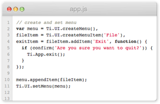
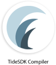
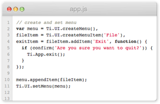
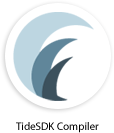
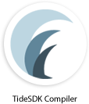
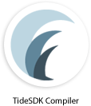

Create multi-platform desktop apps with HTML5, CSS3 and JavaScript
TideSDK formerly known as Titanium Desktop is the best way to create
beautiful, unique desktop
apps
using your web development skills.
TideSDK formerly known as Titanium Desktop is the best way to create
beautiful, unique desktop
apps
using your web development skills.
First things first. Go ahead and grab the latest stable version of the SDK for your operating system and follow the instructions to set it up. You’re ready to rock!
TideSDK’s versatility allows you to couple your favorite web technologies with TideSDK’s powerful API to build native cross-platform desktop apps.
When you’re done. TideSDK will aid you in creating an app package for the operating system of your choosing - say what?
Its easy to understand why thousands of developers love TideSDK. Trust us you'll love it, too!
 



Use a simple and familiar API (accessible in the DOM) to reach the system and native desktop UI's. Harness the resources of the host to create capable apps that use its full potential.
TideSDK is all about discovering that you're not just a web developer. You have the skills for desktop development without knowing it.
Deploy your Webkit-based desktop applications across all three major desktop operating systems with privileged access to native APIs.

Develop your desktop apps quickly using HTML5, CSS3 and JavaScript. Extend the functionality of your app with a scripting language you are comfortable with. TideSDK currently supports Python, PHP, and Ruby:

TideSDK is open source and is committed to incubating the technologies of tomorrow (that will
continue to implement our APIs). A strong community behind TideSDK results in the best support
a developer could wish for. Stay up-to-date, join in to discuss roadblocks and make suggestions.

It’s been a long time coming, but to ensure that you know that we are very active, we thought we dust off the blog and give you a brief update on the state of affairs regarding the project.

Atlassian strongly believes in open source software. They support and contribute to the open source community in a number of ways — supplying their own code, supporting other projects by donating software, and sponsoring Java User Groups.
Our team has been working hard to build the software inherited from Appcelerator across all supported operating systems. More than clean builds, we are looking for the execution of automated tests as well as the artifacts from each build.
We are currently transitioning from TitaniumDesktop and working feverishly to release our 1.3.0-beta. 1.3.0 will come with major library upgrades to support OSX Lion, Mountain Lion, Ubuntu 12.04, Windows 7 and 8. For current application development, please download 1.2.0RC4 in the interim.
Follow TideSDK on Twitter to obtain the latest news and announcements on the upcoming 1.3.0 release.


 
